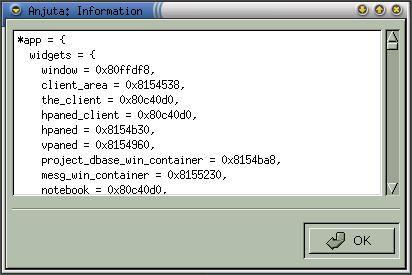

|
|
Anjuta Manual version 0.1Copyright (c) Kh. Naba Kumar Singh |
| Contents | Index | Shortcuts |
| PREV:Running the program | UP:Contents(Debugging) | NEXT:Expression watch |
When you get back the control, say at a breakpoint, you can evaluate expressions or inspect the values of variables in your program. To do this activate Debug->Inspect/Evaluate or click the inspect icon on the debug tool-bar. A dialog box prompting for the expression will appear. Supply the expression (a valid C expression) or a variable name and click OK.

A window will appear that will show the result of the evaluation.

Alternatively, you can first highlight the expression in the editor and perform the above steps. This will save you from typing the expression in the Inspect dialog box.
The expression can be any valid C expression and it may include function calls from your program, library calls, system calls etc.